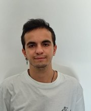

Master’s degree
ThesisTowards Cross-Model Transferability of Hallucination Detection and Mitigation in Large Language Models
PhD Student · CILab

Behind the research
I am Emanuele Fontana, a PhD student at CILab in the Department of Computer Science at the University of Bari Aldo Moro, Italy.
My research interests include large language models, mechanistic interpretability, multimodal AI and trustworthy AI. My academic work has explored sustainable recommender systems, Italian crossword solving, and hallucination detection and mitigation in large language models.
Academic journey
ThesisTowards Cross-Model Transferability of Hallucination Detection and Mitigation in Large Language Models
ThesisAnalisi della sostenibilità dei sistemi di raccomandazione a stato dell’arte e proposta di un addestramento sostenibile
Achievement
Winner of the Bari regional round of the Italian university AI championship: a team competition focused on building AI-powered solutions using open datasets.
About the competitionBeyond research
Find me